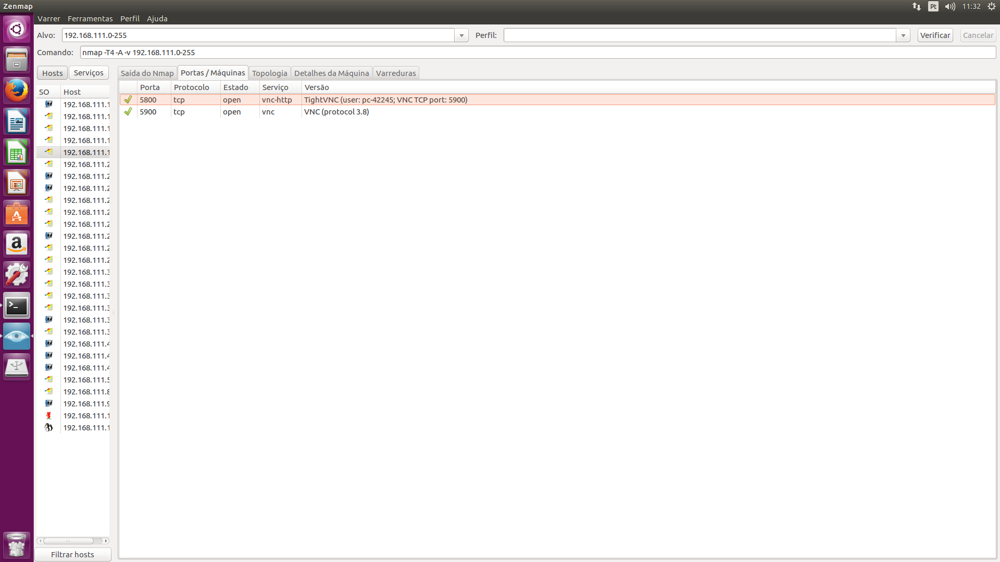

Fundamentos de Redes de Computadores
Atividade proposta:
Criar um relatório técnico explicativo do uso da ferramenta (sugestões: nmap/zenmap) para coleta de informações da rede (faixa de ips, máscaras de redes, serviços e portas abertas). Neste documento deve conter:
-um passo a passo sobre como foi o levantamento dos dados da rede, com prints de telas.
-descrição dos protocolos de redes responsáveis pelos serviços disponíveis nos servidores.
Atividade:
Para realizar esta atividade escolhemos o sistema operacional Ubuntu. Já aberto o sistema operacional, fomos até o terminal é digitamos sudo su para obter previlégios (root).Logo após ter conseguido os privilégios instalamos o Zenmap que permite que os utilizadores possam escrever os comandos utilizados na versão de linha de comandos. Outra funcionalidade muito interessante é a criação da topologia da uma rede. Isto permite ao utilizador ter uma visão geral de todos os componentes de uma rede e ligações que existem entre os vários componentes.
instalamos com o seguinte comando no terminalapt-get install zenmap após a instalação digitamos ifconfig no terminal, para aparecer a rede de cabo e via wi-fi. Com esta busca obtemos a rede: 192.168.111.0 é pegamos esta informação, colocamos no alvo do zenmap.
Veja como ficou:
Observe na Primeira imagem que gerou um comando (nmap –T4 –A –v 192.168.111.0-255).Colocamos o -255 para mapear toda rede do laboratorio.
Veja o que ocorreu quando colocamos para mapear a rede:

Após obter estás informações escolhemos cinco maquinas para aborda no relatório. Ás maquinas escolhidas são de endereços 192.168.111.15, 192.168.111.16, 192.168.111.18 192.168.111.19 e 192.168.111.20 todos de classe C.
Vamos aborda sobre cada maquina escolhida agora:
Primeira maquina de endereço 192.168.1.15
Podemos observar algumas informações como o protocolo de versão 3.8 e entre outras informações na imagem.
Na imagem podemos perceber alguns serviços como da porta 5800 de protocolo tcp serviço vnc-http versão tightVNC(user:pc-42246; VNC TCP porta 5900)que é uma porta para acessa via JAVA/Web.
porta 5900 protocolo tcp estado aberto serviço vnp versão VNC (protocolo 3.8) que é para acessar via programa cliente.
Ainda na primeira maquina podemos observar que:
Portas abertas são: duas
Portas filtradas são: 998
Portas fechadas são: 0
Portas analisadas são: 1000
Endereços ipv4: 192.168.111.15. Mascara: 255.255.255.15
Ipv6: indisponível
Mac:FCAA;14;FCAE;34;
Sistema Operacional: Microsoft Windows vista é Windows Server 2008.
Segunda maquina 192.168.111.16
MAC Address: FC:AA:14::FC:AE:04 (Giga-byte tecnology)
Protocolo versão: 3.8
Nesta imagem podemos perceber alguns serviços como da porta 5800 de protocolo tcp serviço vnc-http versão tightVNC(user:pc-42231;VNC TCP porta 5900)que é para acessa via JAVA/Web.
porta 5900 protocolo tcp estado aberto serviço vnp versão VNC (protocolo 3.8): acessar via programa cliente.
Endereço ipv4: 192.168.111.16
mascara: 255.255.255.16
ipv6: indisponível
Sistemas operacionais: Microsoft Windows Vista, Windows Serve 2008.
Terceira maquina 192.168.111.18
Protocolo de versão: 3.8
MAC address: FC:AA:14:FC:AE:OF (giga byte tecnology)
Nesta imagem podemos perceber alguns serviços como da porta 5800 de protocolo tcp serviço vnc-proxyversão sslstrip que é para acessar via java/web
Porta 5900 protocolo tcp estado aberto serviço vnp versão VNC (protocolo 3.8): acessar via programa cliente.
Sistema Operacional: Windows Serve 2008 e Windows vista
Portas abertas: 2
Portas fechadas: 0
Portas filtradas: 998
Ipv4: 192.168.111.18 mascara 255.255.255.18
Pv6: indisponível
MAC: FC;AA:14:FCAE:OF
Quarta Maquina 192.168.111.19
Protocolo versão 3.8
MAC Address: FC:AA:14:FC:AE:24 (giga-byte techmology)
Porta 5800 protocolo tcp, serviço vnc-http, versão tightvnc(user:pc-42245;vncicp port: 5900) que é acessar via JAVA/Web
Porta 5900 protocolo tcp estado aberto serviço vnc versão vnc(protocol 3.8): Acessar via programa cliente.
Portas abertas: 2
Portas filtradas: 998
Portas fechadas: 0
Endereço ipv4 192.168.111.19 mascara 255.255.255.19
Ipv6 indisponível
Sistema Operacional Windows Vista e Windows Server.
Quinta Maquina 192.168.111.20

Protocolo versão 3.8
MAC Address: FC:AA:14:FC:AE:24 (giga-byte techmology)
Porta 5800 protocolo tcp estado open serviço vnc-http versão tightvnc(user:pc-42245;vncicp port: 5900)que é para acessar via JAVA/Web
Porta 5900 protocolo tcp estado aberto serviço vnc versão vnc(protocolo 3.8):Acessar via programa cliente.
Portas abertas: 2
Portas filtradas: 998
Portas fechadas: 0
Endereço ipv4: 192.168.111.20
mascara: 255.255.255.20
Ipv6 indisponível
Sistema Operacional Windows Vista e Windows Server.
Referências:
https://pplware.sapo.pt/software/nmap-sabe-o-que-e-e-para-que-serve/
http://tutorial-info-dica.blogspot.com.br/2012/03/appsnmap-550-ferramenta-para-exploracao.html